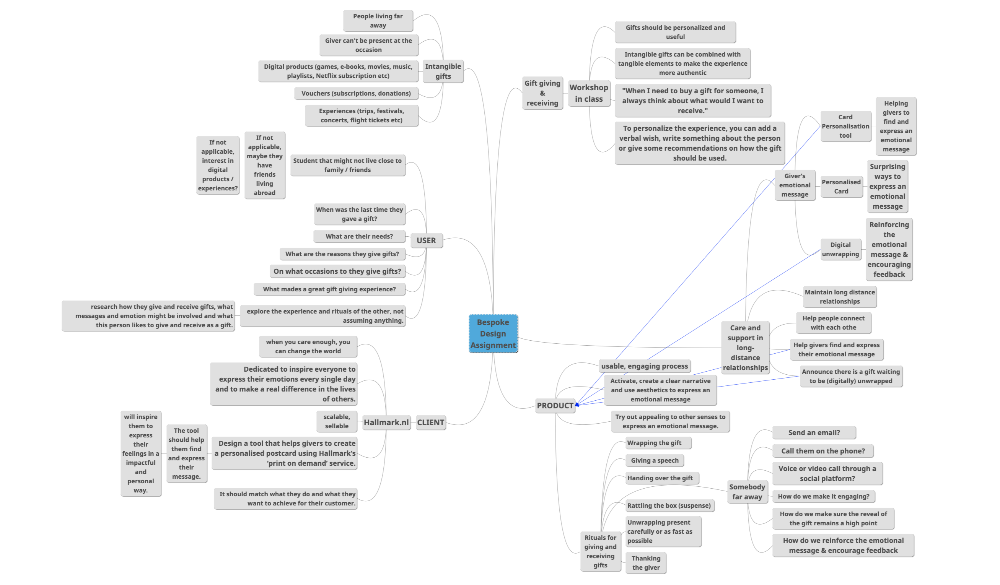
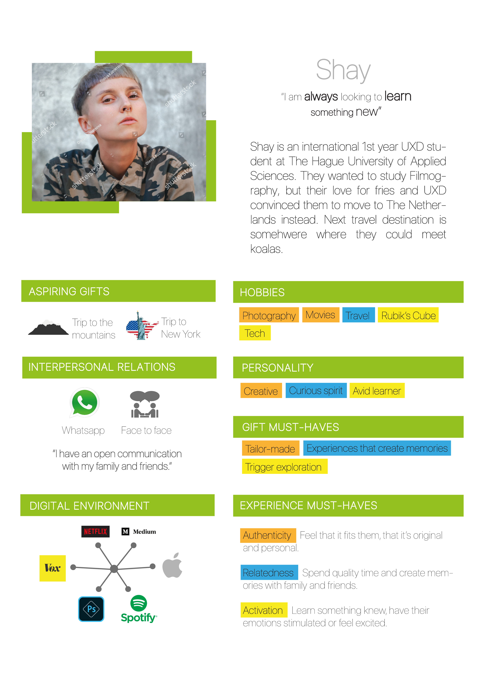
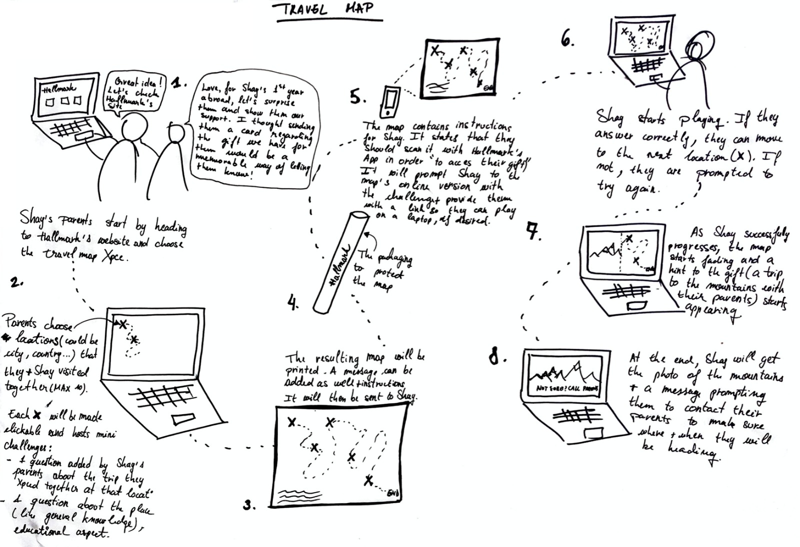

Bespoke Design | Hallmark.nl
OVERVIEW
The aim of this project is to redesign the gift giving experience in a digital world, or in other words, to find a solution for wrapping digital, intangible gifts.
THE PROCESS
To better understand the information that I had available at the beginning of the project, I created a mindmap. There, I put data I had from the client, the design recommendations, the design elements of the final product and all the ideas and information I could think of when it came to gift giving / gift receiving experiences.
Since I had to create something bespoke, I went through a series of interviews and research sessions with a user. I put together the data that I collected and interpreted with my design team member's data and we created a person and design vision.
With the design vision next to me, I went through the ideation phase - I brain dumped my first ideas, I skectched the new ones, I converged using the Highlighting technique and last, I created three individual concepts. We ended up with six design concepts and in order to converge again, we got-voted the ones we considered best for our persona and design vision.

Using the same dot-voting method, we converged once again and chose the final concept, which was then called The Travel Map.
THE RESULTS
The end product consists of three elements: the physical card - The Memories Map, the card personalization tool and the digital unwrapping experience. I was responsible with the card personalization tool (see video above) while my design team member created the digital unwrapping. The Memories Map was created by both of us and it was, as the name says, a map with memories - places our persona visited together with their family. In addition to that, it contained auditory, olfactory and tactile stimuli that represented hints about the gift Shay's parents had for them, which was a trip to the mountains.